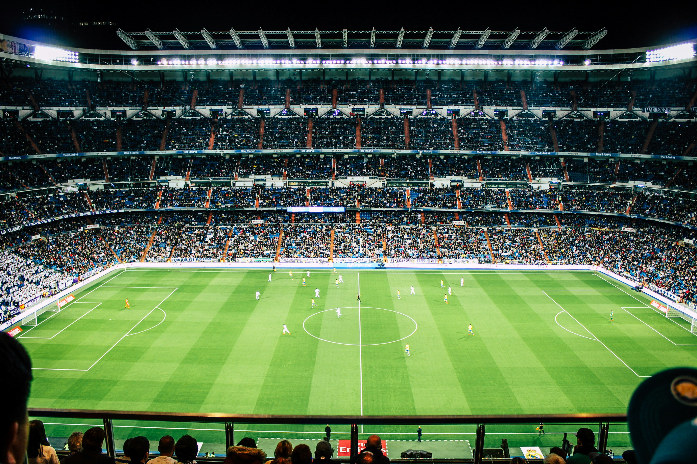

THE MODERN ERA .
1992 - PRESENT
THE GAME, REIMAGINED.
WHEN FOOTBALL BECAME SOMETHING BIGGER
The game never stood still.
Football has always evolved. But few periods altered its identity as profoundly as the decades that followed 1992.
The early 1990s marked the beginning of a different football landscape. New broadcasting arrangements changed how the game was financed and consumed. European competitions developed new formats. Players moved across borders with greater freedom. Clubs began to operate on an increasingly international scale.
The transformation was not confined to boardrooms and television studios. On the pitch, the game continued to reinvent itself. New generations brought different techniques, athletic demand and interpretations of familiar positions. Managers experimented with systems that challenged traditional ideas about space, possession and defending.
The result was a sport that became more connected, more sophisticated and more commercially powerful. Its audience expanded far beyond the cities and countries where its greatest clubs were founded.
Yet the essential contest remained unchanged. 22 players, a ball, two goals and the possibility that one moment could define everything.